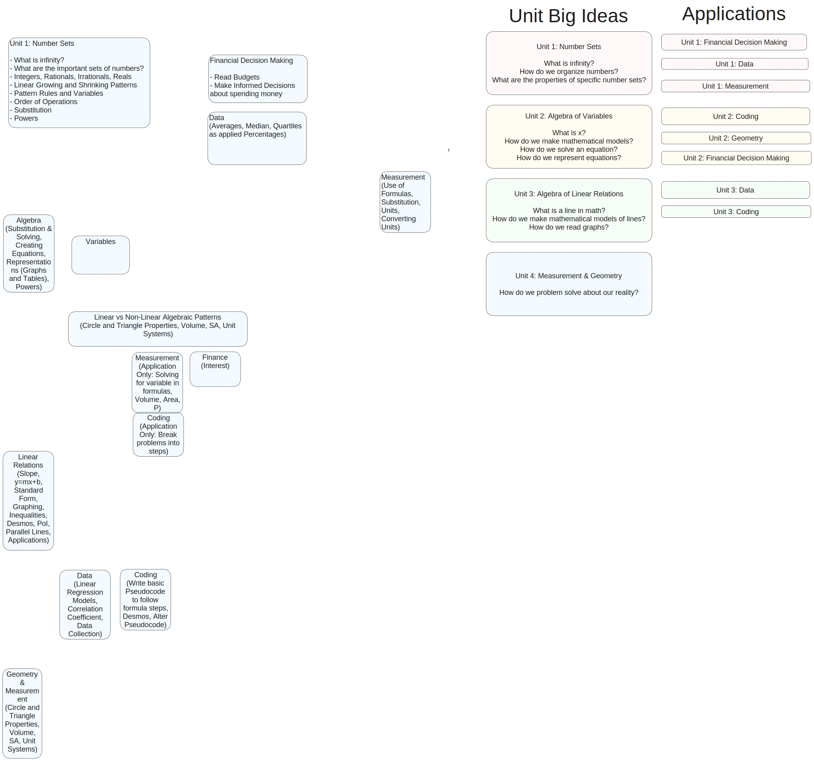

Course Outline¶
MTH1W Mr. Kieran Cluchey
Enduring Understandings¶
- Math is a way of thinking and communication1 between people in your community2 about how to understand order in our world. In this course, we study fundamental ideas about numbers, patterns, and how to measure change so we can become effective communicators.
- All Math courses study Problem Solving:3 the ability to gain new information from a fundamental understanding of a problem. In this course, we are building on our learning in prior math classes about how to reason about our world and our place in it.
- We all have a cultural identity and every culture has a system of mathematics. You bring abundant knowledge with you to your math classroom, as do your classmates, and you are learning to share this knowledge to be an effective communicator who can reason and problem solve by cooperating with other people.4
Student Responsibilities 5¶
To meet and exceed expectations in a mathematics course requires a commitment from each student to:
- continual and consistent personal reflection and goal setting;
- a belief that they are capable of succeeding in mathematics;
- developing the skills to persevere when taking on new challenges;
- connecting prior experiences, knowledge, skills, and habits of mind to new learning;
- a willingness to work both independently and collaboratively in an inclusive environment;
- dedication to ongoing practice;
- a willingness and an ability to receive and respond to meaningful feedback and ask questions to clarify understanding;
- a willingness to explore new learning in mathematics and share insights and experiences.
Units¶
Unit 0: How do we learn?¶
- What is Problem Solving? How do I problem solve? How can I approach any problem in math?
- What does it mean to persevere in a math classroom? What are emotions I feel that support my learning? What emotions prevent me from learning math?
- What tools can I use to learn or express my thinking in mathematics?
Storytelling Project¶
Unit 1: Number Sets¶
- What are the integers? How many integers are there? Factoring
- What are rational numbers? How many numbers are there between 0 and 1? Fraction Arithmetic
- What is a variable? Why are variables used to represent a set of numbers? What is a formula? Polynomials, Expressions
- What is a real number? When do we use fractions and when do we use decimals to represent numbers? Pi, Sets, Limits
Unit 2: Algebra of Variables¶
- How can we use a variable as a placeholder for a number? What do variables represent?
- How do I solve for a variable?
- How do I balance an equation?
Unit 3: Algebra of Linear Relations¶
- What is a linear relation?
- What is a rate of change? Where do we see rates of change in real life?
Unit 4: Measurement & Geometry¶
- Point of Intersection
- Applications of Linear Relations
- Creating Budgets
- Understanding Interest

References
Mathematics: MTH1W Grade 9. (2021). Ontario: Curriculum & Resources. https://www.dcp.edu.gov.on.ca/en/curriculum/secondary-mathematics/courses/mth1w
-
"The Grade 9 mathematics course strives to equip all students with the knowledge, skills, and habits of mind that are essential to understanding and enjoying the importance and beauty of mathematics. Learning in Grade 9 mathematics begins with a focus on the fundamental concepts and foundational skills. This leads to an understanding of mathematical structures, operations, processes, and language that provides students with the means necessary for reasoning, justifying conclusions, and expressing and communicating mathematical ideas." ↩
-
"The Grade 9 mathematics course emphasizes the importance of establishing an inclusive mathematical learning community where all students are invited to experience the living practice of mathematics, to work through challenges, and to find beauty and success in problem solving. As students engage with the curriculum, they are supported in incorporating their lived experiences and existing mathematical understandings, and then integrating the new ideas they learn into their daily lives. When students recognize themselves in what is taught and how it is taught, they begin to view themselves as competent and confident mathematics learners who belong to the larger mathematics community. As students develop mathematical knowledge and skills, they grow as mathematical thinkers. As students explore histories of mathematics and comprehend the importance and beauty of mathematics, they develop their mathematical agency and identity, at the same time as they make connections to other subjects and the world around them." ↩
-
The Grade 9 mathematics curriculum is dynamic, continuous, and coherent and is designed to support all students in developing an understanding of the interconnected nature of mathematics. Students come to understand how concepts develop and how they build on one another. As students communicate their reasoning and findings, they move towards new understandings. Teachers observe and listen to all students and then responsively shape instruction in ways that foster and deepen student understanding of important mathematics. The fundamental concepts, skills, and processes introduced in the elementary grades support students in extending their learning in the secondary grades. ↩
-
"High-quality instruction that emphasizes deep mathematical thinking and cultural and linguistic knowledge and that addresses issues of inequity is the foundation of culturally responsive and relevant pedagogy (CRRP) in mathematics. In CRRP classrooms, teachers reflect on their own identities and pay attention to how those identities affect their teaching, their ideas, and their biases. Teachers also learn about students’ identities, identifications, and/or affiliations and connected lived experiences. Teachers develop an understanding of how students are thinking about mathematical concepts according to their cultural backgrounds and experiences, and make connections with these cultural ways of knowing in their pedagogy. This approach to pedagogy develops social consciousness and critique while valorizing students’ cultural backgrounds, communities, and cultural and linguistic competences. Teachers build on students’ experiences, ideas, questions, and interests to support the development of an engaging and inclusive mathematics classroom community." ↩
-
"It is essential that all students continue to develop a sense of responsibility for and ownership of their own learning as they begin their journey through secondary school." ↩